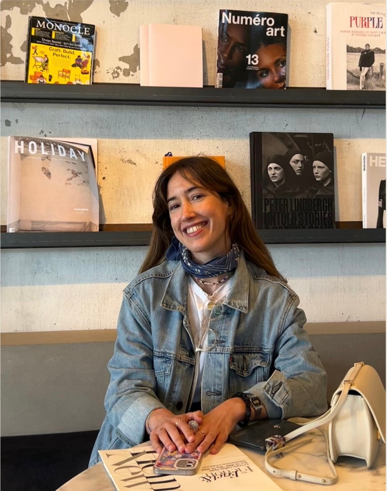

¡Hola!
Soy Carmen.
Me gusta que mi apellido
rime con graciosa.

Curiosa, alegre y observadora, tengo debilidad por el arte y la estética. Me apasionan el cine, la literatura, la moda y, desde la cuna, la buena mesa.
Estudié ADE porque tenía salidas laborales. Entre tanto, algunos veranos ayudaba en el restaurante familiar y afinaba el paladar. Empecé a trabajar en finanzas, pero pronto entendí que necesitaba un entorno más creativo.
Así llegué al idílico mundo de la moda, donde he pasado más de siete años en distintos departamentos. Los últimos cuatro, en Celia B: una empresa con tantas capas como colores.
La escritura fue llegando por su cuenta. Contaba pequeñas anécdotas en Instagram, escribía cartas a mis amigos —puede que a algunos amores— y, por supuesto, despotricaba de vez en cuando en diarios. Así fui encontrando mi tono: irónico, cotidiano, ligero y con referencias pop. Todo lo esperable de una millennial.
Después di con Nora Ephron y me tatué —figuradamente— eso de que todo es material para escribir.
Y es lo que hago hoy. Escribo en La Soga Cultural y, más recientemente, en Substack. También he colaborado con proyectos de gastronomía y moda. Además, por casualidades de la vida —o quizá por mi gracia—, participo en algún que otro podcast.